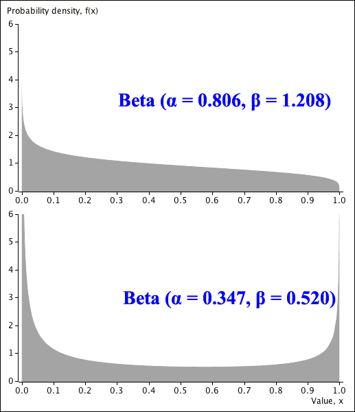

Occasionally variables can only take values within a restricted range. The family of beta distributions is flexible enough to model many variables that must take values between zero and one.
Definition
A random variable \(X\) is said to have a Beta distribution with parameters \(\alpha \gt 0\) and \(\beta \gt 0\),
\[ X \;\;\sim\;\; \BetaDistn(\alpha,\; \beta) \]if its probability density function is
\[ f(x) \;\;=\;\; \begin{cases} \dfrac {\Gamma(\alpha +\beta) }{\Gamma(\alpha)\Gamma(\beta)} x^{\alpha - 1} (1 - x)^{\beta - 1}& \text{if }0 \lt x \le 1 \\[0.4em] 0 & \text{otherwise} \end{cases} \]A special case of the beta distribution arises when \(\alpha = \beta = 1\):
\[ \BetaDistn(\alpha = 1,\; \beta = 1) \;\;\equiv\;\; \RectDistn(0, 1) \]Larger values of the parameters decrease the spread of the distribution. The following Beta distributions all have mean \(E[X] = 0.4\).
On the other hand, smaller values "push the distribution towards zero and one".
